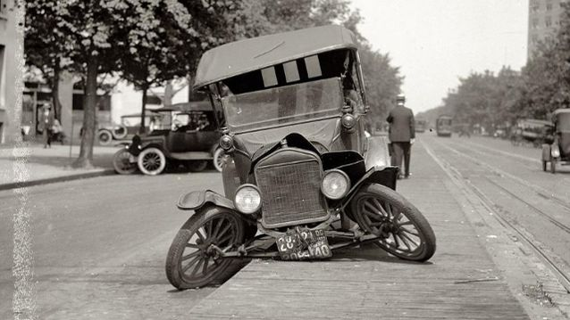
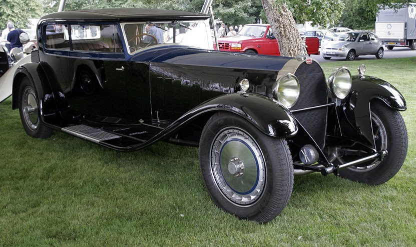
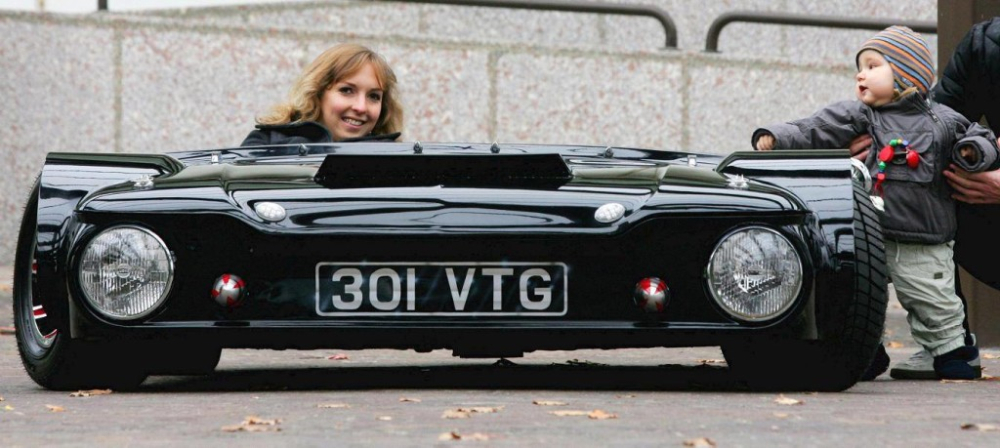
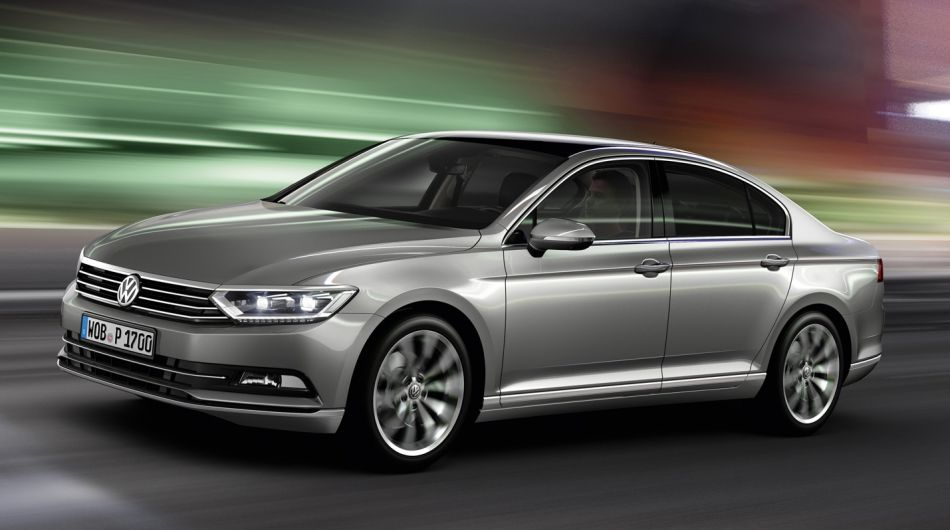

Ljubav koji mnogi muškarci osećaju prema automobilima nasledili su od svojih očeva i od svojih prijatelja, u davnoj mladosti. Prvi pokloni i igračke mladih dječaka su uvijek autići, pa nije ni čudno da se s vremenom pretvaraju u iskrene zaljubljenike u auto-moto industriju i takmičenja vezana uz taj lifestyle. No, postoje neke činjenice koje čak ni najzagriženiji poznavaoci industrije ne znaju. Neke će vas iznenaditi, neke nasmejati, a od nekih ćete dobiti i novu perspektivu na ovaj ludi svet u kojem živimo. Svakako, zanimljiva priča za raspravu na kafi. Uživajte!
Prvi semafor u svetu je postavljen u Sjedinjenim Američkim Državama u Clevelandu još davne 1914. godine na uglu ulice Euclid Avenue i East 105., postavljenje semafora je pomoglo kontrolisanje haosa na američkim ulicama koji je nastajao zbog automobila, pešaka, bicikala, konja i tramvaja.
Prva saobraćajna nesreća u svetu je zabeležena 1769. godine. Auto je još uvek očuvan u razbijenom stanju.

1896. godine zabeležen je prvi smrtni slučaj kao posledica saobraćajne nesreće.
U Kini, za 40 evra vaš automobil će kroz sve gradske gužve neko dovesti do vaše kuće, dok će vas do vašeg cilja odvesti biciklom.
Automobil je najrecikliraniji proizvod na svetu.
Najskuplji automobil ikad proizveden je Buggati Royal Kellner Coupe. Cena? Samo 8,7 miliona dolara.

Rolls Royceov poznati kip s haube nosi nadimak “Spirit of Ectasy” tj. “Duh ekstaze”. Da, ima veze s drogom.
Samo 18% snage koju motor stvori iz benzina završi u snazi na točkovima.
Najstariji auto koji je do danas očuvan proizveden je 1884. godine u Francuskoj. Nedavno je na aukciji prodan za 4.6 miliona dolara.
Rekordno vreme koje je potrebno da se izmeni kompletna mašina automobila je 42 sekunde. Rekord je postavljen na Fordu Escortu 1985. godine.
Na planeti se aktivno koristi otprilike 1 milijarda vozila.
Komandna ploča automobila je u prvobitnom obliku bila drvena daska koja je štitila vozača od blata kojeg su konji bacali prilikom vožnje.
U Francuskoj, alkotest je deo obavezne opreme u svakom automobilu.
Najniži legalni automobil na svetu “visok” je samo 48 centimetara. Zove se “Flatmobile”.

Dok je bio u zatvoru, Hitler je tražio kredit za Mercedes.
Najpopularniji Volkswagenovi automobili Passat, Polo i Jetta nazive su dobili po nazivima vetrova.

80% automobila u Albaniji su Mercedesi.
U Južnoafričkoj republici, na BMW automobile montiraju bacače plamena zbog čestih pokušaja krađe.
Osobe starije od 75 godina u Japanu moraju imati posebnu najepnicu na zadnjem delu automobila.
Ferrari svaki dan proizvede 14 automobila.
Toyota proizvodi dnevno 13.000 vozila.
Svaki četvrti automobil na planeti se proizvede u Kini.
Formula 1 se pri brzini od 193 km/h može voziti po plafonu tunela. Toliko “downforcea” proizvodi njena aerodinamika!
Ako daljinski automobila pritisnete 256 puta, a da vam auto nije u blizini, ključ će prestati sa radiom.
Formule 1 koriste isto obrađene ispusne cevi kao i nuklearni reaktori.